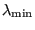
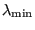

Keyword type: step
This procedure is used to determine eigenfrequencies and thecorresponding eigenmodes of a structure. The frequency range ofinterest can be specified by entering its lower and uppervalue. However, internally only as many frequencies are calculated asrequested in the first field beneath the *FREQUENCY keywordcard. Accordingly, if the highest calculated frequency is smaller thanthe upper value of the requested frequency range, there is noguarantee that all eigenfrequencies within the requested range werecalculated. If the PERTURBATION parameter is used in the *STEP card, the load active in the last *STATIC step, if any, will be taken as preload. Otherwise, no preload will be active.
There are four optional parameters SOLVER, STORAGE, GLOBAL and CYCMPC.SOLVER specifies which solver is used to perform adecomposition of the linear equation system. This decomposition is done onlyonce. It is repeatedly used in the iterative procedure determining the eigenvalues. The following solverscan be selected:
Default is the first solver which has been installed of the following list:SGI, PARDISO, SPOOLES and TAUCS. If none is installed, no eigenvalue analysis can be performed.
The SGI solver should by now be considered as outdated. SPOOLES is very fast, but has noout-of-core capability: the size of systems you can solve is limited by yourRAM memory. With 2GB of RAM you can solve up to 250,000 equations. TAUCS isalso good, but my experience is limited to the  decomposition, whichonly applies to positive definite systems. It has an out-of-core capabilityand also offers a  decomposition, however, I was not able to run either ofthem so far. PARDISO is the Intel proprietary solver and is to my knowledgepresently the fastest.
decomposition, whichonly applies to positive definite systems. It has an out-of-core capabilityand also offers a  decomposition, however, I was not able to run either ofthem so far. PARDISO is the Intel proprietary solver and is to my knowledgepresently the fastest.
If the MATRIXSTORAGE option is used, the stiffness and mass matrices arestored in files jobname.sti and jobname.mas, respectively. These are ASCIIfiles containing the nonzero entries (occasionally, they can be zero;however, none of the entries which are not listed are nonzero). Each lineconsists of two integers and one real: the row number, the column number andthe corresponding value. The entries are listed column percolumn. In addition, a file jobname.dof is created. It has as many entries asthere are rows and columns in the stiffness and mass matrix. Each linecontains a real number of the form ``a.b''. Part a is the node number andb is the global degree of freedom corresponding to selected row. Notice thatthe program stops after creating these files. No further steps aretreated. Consequently, *FREQUENCY, MATRIXSTORAGE only makes sense as the laststep in a calculation.
The parameter STORAGE indicates whether the eigenvalues, eigenmodes, mass andstiffness matrix should be stored in binary form in file jobname.eig forfurther use in a *MODAL DYNAMICS or *STEADY STATE DYNAMICS procedure. Defaultis STORAGE=NO. Specify STORAGE=YES if storage is requested.
The parameters GLOBAL and CYCMPC only make sense in the presence ofSOLVER=MATRIXSTORAGE. GLOBAL indicates whether the matrices should be storedin global coordinates, irrespective of whether a local coordinates system forany of the nodes in the structure was defined. Default is GLOBAL=YES. ForGLOBAL=NO the matrices are stored in local coordinates and the directions infile jobname.dof are local directions. Notice that the GLOBAL=NO only works if no single or multiple point constrains were defined andone and the same coordinate system was defined for ALL nodes in thestructure. The second parameter (CYCMPC) specifies whether any cyclic multiple pointconstraints should remain active while assembling the stiffness and mass matrixbefore storing them. Default is CYCMPC=ACTIVE. CYCMPC=INACTIVE means that allcyclic MPC's and any other MPC's containing dependent nodes belonging tocyclic MPC's are removed before assembling the matrices. The CYCMPC parameteronly makes sense if GLOBAL=YES, since only then are MPC's allowed.
For the iterative eigenvalue procedure ARPACK [42] isused. The eigenfrequencies are always stored in file jobname.dat.
At the startof a frequency calculation all single point constraint boundary conditions,which may be zero due to previous steps, are set to zero.
First line:
Example: *FREQUENCY 10
requests the calculation of the 10 lowest eigenfrequencies and corresponding eigenmodes.
Example files: beam8f, beamf.